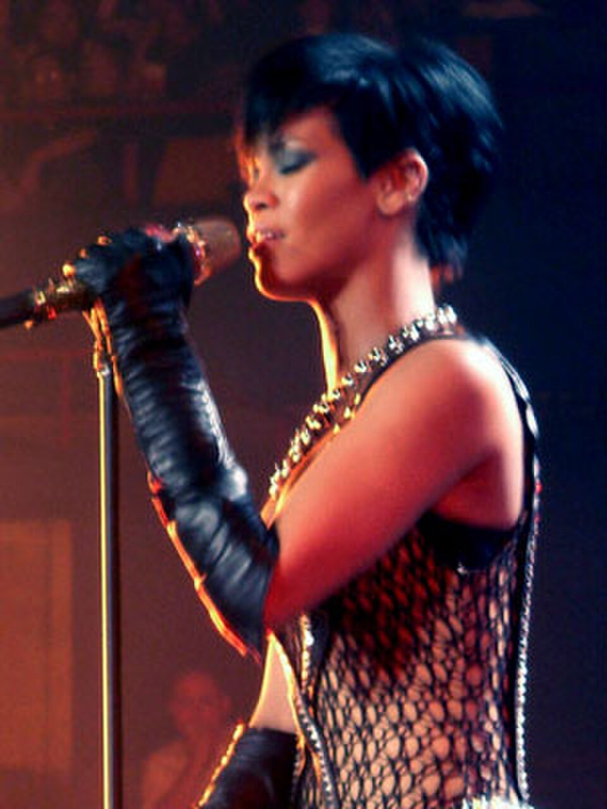
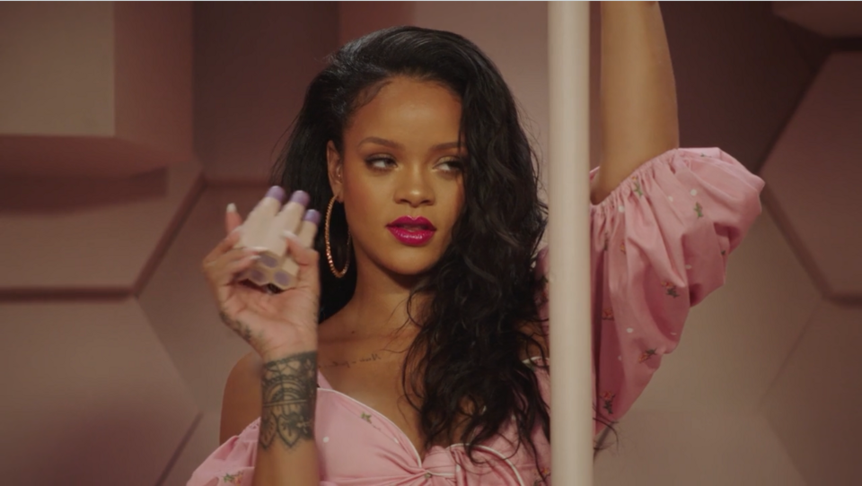

This is an original educational biography written for Stories, Lives & Lessons. It looks beyond celebrity headlines and follows Rihanna's development from a young girl in Barbados into a recording artist, performer, entrepreneur, philanthropist and cultural figure.
The purpose is not simply to celebrate fame. It is to examine the choices, changes, challenges and ideas that make her journey useful for readers who want to understand how a long career can develop.
1. Childhood: Before the World Knew Rihanna
Robyn Rihanna Fenty was born on February 20, 1988, in Saint Michael, Barbados. Long before international tours, recording contracts, business companies and stadium performances, she was a child growing up in a Caribbean environment that would later become an important part of her public identity.

Rihanna's childhood matters because it gives context to the person behind the worldwide name. Fame can make an artist appear as though they have always belonged to the international stage, but every successful career begins somewhere much smaller. In Rihanna's case, that beginning was Barbados.
Barbados is more than a geographical detail in her biography. The island's culture helped shape the sounds, attitudes and visual identity that later appeared in her work. Caribbean music and culture were not something she had to discover after becoming famous. They were already part of the environment in which she was raised.
Rihanna has spoken publicly over the years about aspects of her childhood and family life. Her early experiences included ordinary school years, friendships and the gradual discovery that performing could become more than a hobby.
She did not begin life knowing exactly which career she would have. That is an important point for young people. Many people expect themselves to identify one perfect career immediately, yet real life usually develops through experiments, opportunities and changes.
Rihanna's story demonstrates that uncertainty at a young age does not automatically mean a person lacks direction. Sometimes direction appears after a person is willing to try something.
2. Family, School and Early Personality
Rihanna grew up in a family environment influenced by Caribbean culture. Her childhood included both ordinary family experiences and the challenges that can come with growing up while parents and children navigate different circumstances.
At school, Rihanna was not simply waiting for a record contract. She participated in activities outside music. One detail documented by the GRAMMY organization is that she was an army cadet during high school and reached the rank of corporal.
That detail is useful because it challenges the idea that successful people are always focused on one activity from childhood. A young person can have several interests and still eventually discover a professional path.
Rihanna also became interested in singing. She formed a girl group with two classmates, an experience that gave her an opportunity to perform with other people and gain confidence.
The group did not become her final career, but that does not make the experience meaningless. Early attempts can teach people how to stand in front of others, communicate, cooperate and handle uncertainty.
This is one of the most useful parts of Rihanna's early story. Not every experiment needs to become a permanent achievement. Sometimes the value of an early attempt is that it prepares a person for the next opportunity.
3. The Meeting That Changed Her Direction
A major turning point came when producer Evan Rogers heard Rihanna perform while visiting Barbados. Rihanna was still a teenager. Rogers recognized potential in her voice and became involved in recording demonstration material.
This moment illustrates the importance of exposure. Talent that remains hidden can be difficult for the right people to notice. Rihanna had to perform, record and place herself in situations where another person could recognize her ability.
Rogers later helped her make demo recordings, including material that would eventually introduce her to the American music business.
The story is often summarized as a lucky discovery, but preparation was also involved. A producer cannot recognize an ability that a person has never developed or demonstrated.
Rihanna eventually travelled to the United States to pursue recording opportunities. Her demo reached people at Def Jam, and she auditioned for the label.
The audition became another major step. Instead of treating the opportunity as something guaranteed, she had to demonstrate why she belonged there.
4. Leaving Barbados and Entering the Music Industry
Moving from Barbados toward the American music industry represented a major change. Rihanna was leaving a familiar environment and entering a highly competitive international business.
The transition required adaptation. The music industry operates with record companies, producers, songwriters, managers, photographers, stylists, promoters, radio stations, streaming services and many other professionals.
For a young artist, learning to operate inside that system is almost as important as singing.
Rihanna's early career therefore provides two parallel stories. One is the development of an artist. The other is the development of a professional who learned how the entertainment business worked.
Her first major single, "Pon de Replay," introduced a Caribbean-rooted dance energy to a large international audience. The song helped make her recognizable and demonstrated that her background could become part of her commercial identity.
5. Music of the Sun: The Beginning
Rihanna released her debut studio album, Music of the Sun, in 2005. The album introduced listeners to an artist whose sound contained strong Caribbean and dance influences while also fitting into the international pop market.
The project was important because it established the foundation for everything that followed. Rihanna was not yet the global superstar people would later know. She was an emerging artist trying to prove that she could build a lasting career.
The album included "Pon de Replay," a song built around the simple idea of wanting the DJ to play the music again. Its strength came from energy, rhythm and a direct connection with the dance floor.
"Pon de Replay" — Meaning and Lesson
The song can be understood as a celebration of music itself. The speaker is caught in the energy of the moment and wants the sound to continue.
The lesson is simple: enthusiasm is contagious. Whether someone is creating music, building a business or learning a skill, genuine energy can help people connect with the work.
6. A Girl Like Me: Expanding the Audience
In 2006 Rihanna released A Girl Like Me. The album expanded her commercial reach and demonstrated that she could move beyond the sound of her debut.
One of the most important songs from the project was "SOS." It became her first number-one hit on the Billboard Hot 100.
The success of "SOS" showed that Rihanna could compete at the highest level of mainstream pop. It also demonstrated the importance of recognizing what makes a song memorable while still giving the artist a distinct personality.
"SOS" — Meaning and Lesson
The song presents romantic confusion and an urgent desire for help. Its energy contrasts with the emotional uncertainty inside the story.
A useful lesson is that people sometimes hide difficult emotions behind energetic behavior. A person can appear confident or cheerful while still dealing with uncertainty.
7. Good Girl Gone Bad: The Transformation
The release of Good Girl Gone Bad in 2007 became one of the largest turning points in Rihanna's career. Her image, sound and public presentation changed significantly.
The album helped transform her from a successful young singer into a major international pop figure.
"Umbrella," featuring Jay-Z, became the defining song of the period. It reached number one in many countries and earned Rihanna her first GRAMMY Award.
The album also contained "Shut Up and Drive," "Hate That I Love You," "Don't Stop the Music" and "Rehab." The later reissue added major songs including "Take a Bow" and "Disturbia."
"Umbrella" — Meaning and Lesson
"Umbrella" uses the image of protection to communicate loyalty and support. The central idea is that someone can remain present when difficult conditions arrive.
The educational lesson is that genuine relationships are tested during difficult moments rather than only celebrated during easy ones.
"Take a Bow" — Meaning and Lesson
"Take a Bow" deals with disappointment and the end of a relationship after dishonesty. Its tone is controlled rather than desperate.
The lesson is about recognizing when an explanation is no longer enough. Sometimes protecting one's dignity means accepting that a relationship has changed.
"Disturbia" — Meaning and Lesson
"Disturbia" explores an atmosphere of fear, confusion and psychological unease. Its darker mood demonstrates that pop music can address uncomfortable emotions without becoming a direct lecture.
The lesson is that difficult feelings can be expressed creatively. People do not always have to pretend that every day is positive. Recognizing emotions can be the first step toward understanding them.
8. Rated R: A Darker Chapter
Rihanna's fourth studio album, Rated R, arrived in 2009. Its sound was darker and more intense than much of her earlier work.
The album included "Russian Roulette," "Hard," "Rude Boy," "Wait Your Turn," "Rockstar 101," "Te Amo" and other tracks.
The period surrounding the album was also marked by a highly publicized and traumatic incident involving domestic violence. It is important to discuss this part of her history respectfully rather than treating a painful experience as entertainment.
The album demonstrated how an artist can create work during a difficult period without allowing the difficult period to become the entire definition of their identity.
"Russian Roulette" — Meaning and Lesson
The song uses dangerous imagery to explore fear, uncertainty and emotional risk. It is intentionally uncomfortable.
Its broader lesson is that relationships and life decisions can sometimes feel high-risk. Recognizing danger rather than ignoring it is an important part of protecting yourself.
"Hard" — Meaning and Lesson
"Hard" is built around confidence and determination. The song presents a speaker who refuses to be underestimated.
The lesson is not that a person should become aggressive. The useful idea is that confidence can help someone continue working when other people doubt them.
"Rude Boy" — Meaning and Lesson
"Rude Boy" returns to a more playful and dance-oriented atmosphere. It shows that a darker career chapter does not prevent an artist from creating lighter material.
The lesson is balance. A person can take difficult experiences seriously without allowing them to remove every form of joy.
9. Loud: Returning to Brightness
In 2010 Rihanna released Loud. The project was brighter, more colorful and more energetic than Rated R.
The album included "Only Girl (In the World)," "What's My Name?" and "S&M," among other songs.
"Only Girl (In the World)" — Meaning and Lesson
The song expresses the desire to feel uniquely valued by another person. It is about attention, romance and emotional exclusivity.
The lesson is that people often want to feel seen and appreciated. Healthy relationships should involve recognition and respect rather than treating another person as invisible.
"What's My Name?" — Meaning and Lesson
The song focuses on attraction, curiosity and romantic connection. Its conversational quality makes it feel like a moment between two people.
The lesson is that communication is important in relationships. Attraction may begin a connection, but understanding another person requires communication.
10. Talk That Talk
Rihanna's sixth studio album, Talk That Talk, was released in 2011. It continued the mixture of pop, R&B, dance and Caribbean influences that had become part of her identity.
"We Found Love" — Meaning and Lesson
"We Found Love," featuring Calvin Harris, describes intense love developing in a difficult environment. The contrast between excitement and instability is central to the song's emotional power.
The lesson is especially relevant to relationships: intensity does not automatically equal health. A relationship can feel powerful and still contain destructive patterns.
"Where Have You Been" — Meaning and Lesson
This song is built around searching for connection and wondering where the right person has been.
The lesson can be understood as patience and openness. Human relationships often develop at unexpected times.
11. Unapologetic: Confidence and Vulnerability
In 2012 Rihanna released Unapologetic. The album contained some of the most recognizable songs of her career, including "Diamonds," "Stay," "Pour It Up" and "What Now?"
"Diamonds" — Meaning and Lesson
"Diamonds" uses the image of something precious and bright to communicate human value, love and resilience.
One lesson is that a person's worth should not depend completely on outside approval. Difficult circumstances can affect confidence, but they do not automatically remove a person's value.
"Stay" — Meaning and Lesson
"Stay" is more vulnerable and restrained than many of Rihanna's large pop hits. It explores uncertainty and emotional dependence.
The lesson is that vulnerability is not necessarily weakness. Acknowledging uncertainty can be more honest than pretending to have every answer.
"What Now?" — Meaning and Lesson
"What Now?" captures confusion after a major emotional experience. The speaker is unsure about the next step.
The lesson is that uncertainty is part of life. Not knowing the next step does not mean a person has failed. Sometimes the next decision becomes clear only after a period of reflection.
12. ANTI: Choosing Artistic Freedom
In 2016 Rihanna released ANTI, her eighth studio album. The project represented another significant change in her artistic approach.
Instead of simply repeating the formula that had produced previous hits, the album explored a more atmospheric and experimental sound.
Songs such as "Consideration," "Work," "Needed Me," "Kiss It Better," "Love on the Brain" and "Same Ol' Mistakes" became important parts of the project.
"Consideration" — Meaning and Lesson
"Consideration" presents a demand for respect and personal freedom. The song can be interpreted as an artist refusing to allow other people's expectations to completely control her direction.
The lesson is that personal growth sometimes requires setting boundaries. You cannot satisfy every expectation while remaining true to yourself.
"Work" — Meaning and Lesson
"Work," featuring Drake, draws heavily on Caribbean and dancehall influences. Its sound helped reconnect Rihanna's international pop audience with Caribbean musical language and rhythm.
The song's broader lesson is persistence. The word "work" itself connects effort with progress.
For learners and entrepreneurs, the lesson is straightforward: ambition without consistent effort rarely produces lasting results.
"Needed Me" — Meaning and Lesson
"Needed Me" presents emotional independence and boundaries. The speaker rejects the idea that another person has the power to define her value.
The lesson is self-respect. Healthy independence means understanding that another person's rejection does not determine your entire worth.
"Love on the Brain" — Meaning and Lesson
"Love on the Brain" uses a soul-influenced style to explore the complicated pull of love.
The lesson is that emotions can be contradictory. People can feel deep affection while also recognizing that a relationship creates difficulty. Understanding that contradiction can encourage more honest reflection.
13. What Rihanna's Major Music Can Teach Us
Looking at Rihanna's catalogue as a whole reveals a pattern. Her songs do not all communicate one message. Instead, they represent different emotional stages.
Some songs celebrate love. Others describe disappointment. Some are about confidence. Others reveal uncertainty. Some are designed for parties, while others invite listeners into more serious emotional spaces.
Lesson One: Reinvention Matters
Rihanna did not remain musically identical from 2005 to 2016. Her albums changed in sound, presentation and emotional atmosphere. That ability to evolve helped prevent her career from becoming trapped in one period.
In ordinary life, reinvention can mean learning a new skill, changing a business strategy, improving communication or moving into a new career.
Lesson Two: Confidence and Vulnerability Can Coexist
Songs such as "Hard" and "Needed Me" present confidence, while "Stay" and "Love on the Brain" expose more vulnerable emotions.
This contrast demonstrates that strength does not require emotional silence. A strong person can admit uncertainty and still continue moving forward.
Lesson Three: Your Background Can Become Your Strength
Rihanna's Caribbean background remained important even after she became a global pop star. Songs such as "Work" demonstrate how Caribbean influence could remain part of an international sound.
People often feel pressure to remove their background when trying to enter a larger market. Rihanna's career provides another possibility: your background can become part of what makes your work recognizable.
Lesson Four: Boundaries Matter
Several songs explore relationships and personal independence. While songs should not be treated as medical or relationship instructions, they can encourage listeners to think about respect, communication and personal boundaries.
Lesson Five: Success Requires Adaptation
Rihanna moved from music into acting, fashion, beauty and business. Each field required different skills.
The lesson is that previous success can create opportunities, but future success still requires learning.
14. Rihanna's Studio Albums and Their Broad Themes
Music of the Sun — 2005
The debut introduced Rihanna to the international market and highlighted Caribbean and dance influences. Its broad lesson is about beginnings, cultural identity and introducing yourself to the world.
A Girl Like Me — 2006
This project expanded her audience and contained the breakthrough single "SOS." It represents development after an initial introduction.
Good Girl Gone Bad — 2007
This was the major transformation era. Rihanna's sound, image and confidence became more distinctive and commercially powerful.
Rated R — 2009
A darker and more serious project associated with emotional transformation and artistic risk.
Loud — 2010
A brighter and energetic project containing major pop and dance records.
Talk That Talk — 2011
A project combining pop, dance, R&B and Caribbean influence with themes of attraction and complicated relationships.
Unapologetic — 2012
A project balancing confidence, vulnerability, romance and self-expression.
ANTI — 2016
A more experimental project centered on artistic freedom, independence and emotional complexity.
The progression from album to album is itself a useful educational example. A long career does not have to be a straight line. It can contain different chapters, different audiences and different goals.

15. Rihanna's Important Collaborations
Rihanna's career also includes major collaborations with other artists. Collaboration became one of the ways she expanded her musical range.
Her work with Jay-Z on "Umbrella" connected her with hip-hop while maintaining a strong pop identity.
Her collaboration with Eminem on "Love the Way You Lie" placed her voice inside a serious narrative about a destructive relationship. The song became widely discussed because of its subject matter.
Her work with Calvin Harris on "We Found Love" demonstrated how electronic dance music could become a major part of her sound.
Her collaboration with Drake on "What's My Name?" and later "Work" explored different aspects of romantic storytelling and Caribbean influence.
She also collaborated with Kendrick Lamar on "LOYALTY." The song won the GRAMMY for Best Rap/Sung Performance in 2018.
These collaborations demonstrate a practical lesson for creators: working with people who have different strengths can create something that neither person would necessarily produce alone.
16. Rihanna Beyond Music: Acting and Screen Work
Rihanna's career expanded beyond recording and performing music. She appeared in films and contributed her voice to animated projects.
Her acting work includes Battleship and Ocean's 8. She also voiced a major character in the animated film Home.
Acting gave Rihanna another way to use performance skills. Unlike a concert, acting requires a performer to work inside a written story, respond to other actors and communicate through character.
The broader lesson is that transferable skills matter. Public performance can build confidence, communication and presentation skills that can be applied to other industries.
17. Rihanna as an Entrepreneur
One of the most important changes in Rihanna's career was the movement from entertainment into entrepreneurship.
Her businesses have included Fenty Beauty, Fenty fashion ventures, Savage X Fenty and other commercial projects.
This expansion changed the way many people viewed her. She was no longer only an artist earning from recordings and performances. She was building businesses connected to beauty, fashion and consumer products.
The business story is particularly interesting because it demonstrates the difference between having fame and building a brand.
Fame can generate attention, but attention alone does not guarantee that customers will repeatedly purchase a product. A business needs product quality, positioning, operations, distribution, customer understanding and management.
Do not confuse popularity with a business model. If you want to build a company, identify a real customer need and create something useful enough that people want to return to it.
18. Fenty Beauty and Representation
Fenty Beauty became one of the most discussed parts of Rihanna's business career. The brand became associated with a wider approach to shade availability and representation in cosmetics.
The importance of this strategy was partly connected to a gap that many consumers had experienced in the beauty industry. Rihanna's approach helped place inclusivity at the centre of mainstream beauty conversation.
This is a useful business case study because it demonstrates a basic principle: listening to consumers can reveal opportunities.
An entrepreneur does not always need to invent a completely new category. Sometimes a better opportunity exists in improving a product or service for people who have not been served well.
The larger lesson is that understanding the customer is more valuable than simply following whatever is fashionable.
19. Savage X Fenty and Fashion
Rihanna's work in fashion and lingerie expanded the Fenty identity into another market.
Savage X Fenty became known for presentations that emphasized a wide range of people and appearances.
The business also demonstrated the importance of storytelling. Customers do not only purchase an object. They often purchase the identity, feeling and message associated with that object.
For entrepreneurs, this creates an important lesson: understand not only what your product does, but also what your customers want to feel when they use it.
20. Philanthropy and the Clara Lionel Foundation
Rihanna founded the Clara Lionel Foundation in 2012. The organization was named after her grandparents and has supported education and emergency response initiatives.
Her philanthropic work adds another dimension to her public career. Celebrity influence can attract attention, but meaningful philanthropy requires more than publicity.
Organizations need planning, partnerships, accountability and understanding of the communities they are trying to support.
The lesson is that success can create resources that may be directed toward purposes beyond personal consumption.
Education is especially important because it can influence a person's future opportunities. Supporting education can therefore have effects that continue beyond a single donation.
21. Her Connection to Barbados
Although Rihanna became a global celebrity, Barbados remained central to her identity.
Her relationship with the island is visible in her music, public appearances and cultural references.
Barbados also recognized her public contribution. She was appointed an ambassador by the country in 2018 and became a National Hero of Barbados in 2021.
This part of her story is significant because international success can sometimes create distance between a person and their original community. Rihanna's continued connection with Barbados shows another possibility: global recognition can coexist with local identity.
22. Personal Life, Privacy and Motherhood
Rihanna's public career has been accompanied by intense media interest in her personal life. As with any public figure, it is important to separate verified information from rumors and speculation.
In recent years Rihanna has also become a mother. Motherhood represents another chapter in her life beyond music and business.
Her decision to balance family life with a major public career illustrates something many people experience: life does not always fit neatly into separate categories.
A person can be a professional, parent, entrepreneur, friend and community member at the same time. Different responsibilities may sometimes compete for attention.
The lesson is not that everyone should follow Rihanna's choices. Rather, it is that success can be redefined as circumstances change. What a person wants at twenty may not be exactly what they want at thirty.
23. Lift Me Up and the Return to Music
After ANTI, Rihanna did not immediately release another studio album. However, she returned to recorded music with "Lift Me Up" for the Black Panther: Wakanda Forever soundtrack in 2022.
The song represented a softer and more reflective side of her voice. It was connected to themes of remembrance, love and loss.
"Lift Me Up" — Meaning and Lesson
The song can be understood as an expression of grief, remembrance and the desire for emotional support.
Its lesson is that grief is not something that must always be hidden. Music can provide a language for emotions that ordinary conversation sometimes struggles to express.
Rihanna subsequently performed at the Super Bowl halftime show in 2023, returning to a huge global stage after a period away from live performance.
The performance demonstrated that an artist can step away from the constant cycle of releases and still return with enormous public interest.
24. Rihanna's Career Timeline
1988
Rihanna is born in Saint Michael, Barbados.
Teenage Years
She develops an interest in singing, performs and eventually meets producer Evan Rogers.
2005
Music of the Sun introduces Rihanna to the international recording market.
2006
A Girl Like Me expands her audience and "SOS" becomes a major breakthrough.
2007
Good Girl Gone Bad transforms her career and "Umbrella" becomes a worldwide hit.
2009
Rated R presents a darker and more serious musical direction.
2010
Loud returns with a bright and energetic pop sound.
2011
Talk That Talk continues her commercial run and includes "We Found Love."
2012
Unapologetic is released and "Diamonds" becomes one of her signature songs.
2016
ANTI becomes a major artistic statement built around greater creative freedom.
2018–2021
Her cultural and business influence continues to expand while her connection with Barbados receives national recognition.
2022–2023
She returns to recorded music with "Lift Me Up" and performs at the Super Bowl halftime show.
25. Ten Practical Lessons From Rihanna's Journey
1. Start Where You Are
Rihanna began in Barbados. A person does not need to begin in the largest city or most powerful industry to develop meaningful talent.
2. Develop Before Opportunity Arrives
When Evan Rogers encountered Rihanna, she already had experience performing. Preparation increased the value of the opportunity.
3. Learn From Each Chapter
Every album represented a different stage. Instead of treating change as failure, Rihanna used new stages to develop another version of her art.
4. Do Not Let One Success Trap You
After becoming successful in music, she explored business and fashion. A successful first career can become a foundation for another.
5. Understand Your Audience
Fenty Beauty's approach demonstrated the commercial value of listening to consumers who feel underserved.
6. Protect Your Identity
Rihanna's Caribbean background remained visible throughout her global career.
7. Learn to Reinvent
Markets change, audiences change and people change. A person who refuses to learn can eventually become less relevant.
8. Confidence Does Not Mean Perfection
Her music includes both confident and vulnerable moments. People do not have to pretend to know everything.
9. Use Influence Responsibly
Her philanthropic work demonstrates one way public attention can be directed toward broader social goals.
10. Remember Where You Started
Her continued connection with Barbados demonstrates the value of maintaining a relationship with one's roots.
26. What Rihanna's Career Teaches About Building a Personal Brand
A personal brand is not simply a logo, photograph or social-media username. It is the collection of expectations people develop about what a person represents.
Rihanna's brand developed over many years. Music created recognition. Fashion created visual identity. Beauty created a connection with consumers. Philanthropy added a social dimension.
The important point is that these areas were connected rather than completely random.
For an ordinary person, personal branding can work in the same basic way without requiring celebrity status. A student can become known for reliable educational content. A designer can become associated with a particular style. A small business can become known for excellent customer service.
The lesson is consistency combined with development.
Consistency tells people what they can expect. Development prevents the identity from becoming stagnant.
27. What Her Music Teaches About Storytelling
Music can communicate a story without presenting the story like a traditional book.
"Umbrella" uses a simple image of protection. "Diamonds" uses an image of brightness and value. "We Found Love" contrasts romance with an unstable environment. "Stay" focuses on vulnerability.
These examples demonstrate a useful storytelling principle: an idea becomes memorable when it is connected to a strong image or emotion.
Writers, educators and creators can use the same principle. Instead of explaining every idea abstractly, connect the idea to an image, experience or situation that readers understand.
Rihanna's music also demonstrates contrast. A confident song can be followed by a vulnerable song. A dance record can sit beside a serious ballad.
Contrast keeps a body of work interesting because it prevents every part from sounding emotionally identical.
28. What Her Career Teaches About Failure and Change
A public career can create the impression that every decision was planned perfectly. Real careers are rarely that simple.
Artists change directions because some ideas work better than others. Businesses change products because customers respond differently than expected. People leave projects, start new ones and learn from mistakes.
Rihanna's career is useful because it contains multiple changes.
The movement from Caribbean-influenced beginnings to mainstream pop, then to darker music, then to experimental work and eventually to business demonstrates that long-term success can involve repeated adjustment.
The lesson for readers is not to copy every decision she made. It is to understand the principle behind the evolution: learn, evaluate and adapt.
29. Separating Public Facts From Rumors
Celebrity biographies often contain rumors, social-media claims and unverified stories. This page intentionally focuses on established biographical information and widely documented career events rather than presenting rumors as facts.
This distinction matters because public figures are still people. Repeatedly publishing an unverified claim can turn speculation into something that looks like fact.
Educational content should therefore distinguish between documented events, interpretation and opinion.
When discussing the meaning of a song, the interpretation should also be presented as an interpretation rather than pretending that the writer's intention can always be known with absolute certainty.
30. Rihanna's Continuing Legacy
Rihanna's story is larger than the number of songs she has released or the awards she has received. Her career demonstrates how a person can move through several identities without completely abandoning the earlier ones.
She began as a young singer from Barbados. She became a recording artist, then an international performer, then an actor, entrepreneur, fashion figure and philanthropist.
Her music contains different emotional lessons. "Umbrella" encourages us to think about support. "Diamonds" can be read as a reminder of worth and resilience. "Needed Me" emphasizes independence. "Stay" shows vulnerability. "Work" connects progress with effort. "Lift Me Up" reminds listeners of remembrance and emotional support.
Her business career offers another set of lessons. Fenty Beauty demonstrates the importance of listening to consumers. Her fashion ventures demonstrate the role of representation and storytelling. Her philanthropic work demonstrates one way resources and influence can be used beyond personal success.
Perhaps the strongest lesson is that a person's life does not need to remain inside the boundaries of the first opportunity they receive.
Rihanna's first opportunity was music. She did not stop there.
That does not mean everyone must become an entrepreneur or celebrity. The deeper lesson is to remain open to learning.
A person can start with one skill and discover another. A small business can develop into a larger company. A student can discover that a hobby contains the beginning of a career. A difficult chapter can become a source of understanding.
Rihanna's journey also demonstrates the value of identity. Her global success did not erase the fact that she came from Barbados. Instead, her Caribbean background became one of the features that helped make her recognizable.
For readers, that creates a final question: what part of your own background could become a strength rather than something you feel pressured to hide?
That is where the story becomes more than a celebrity biography. It becomes a lesson about growth, identity, resilience, creativity, business and the freedom to build more than one chapter in life.
Sources and Further Reading
The article above is original explanatory writing. The following sources were consulted for factual background and career information:
- GRAMMY.com — Rihanna artist biography, awards and career information.
- GRAMMY.com — Rihanna's music and discography career guide.
- GRAMMY.com — Coverage of Rihanna's career transformation and Good Girl Gone Bad.
- GRAMMY.com — Rihanna's business, philanthropy and cultural impact.
Readers should consult authoritative music-industry and official organizational sources when checking individual dates, awards, business announcements or later developments.
Follow Kinglee Mutwiri
If you enjoy stories about influential people, music, history, personal growth and the lessons hidden inside real-life journeys, follow the author for more original stories.